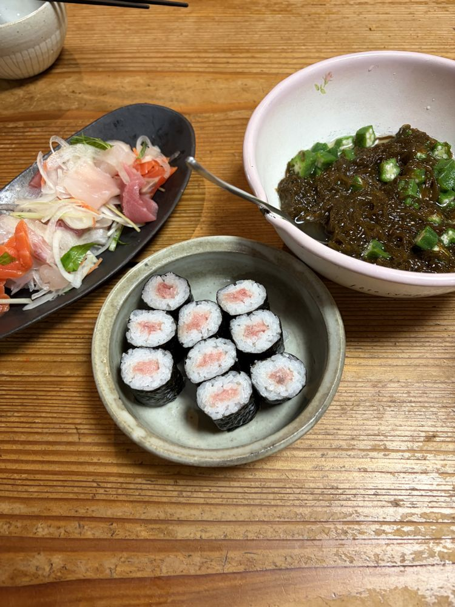
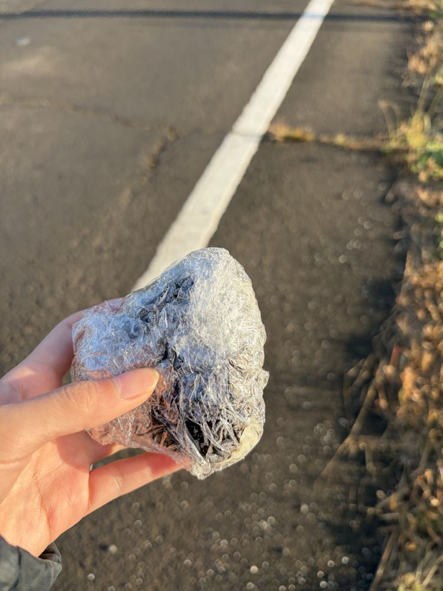
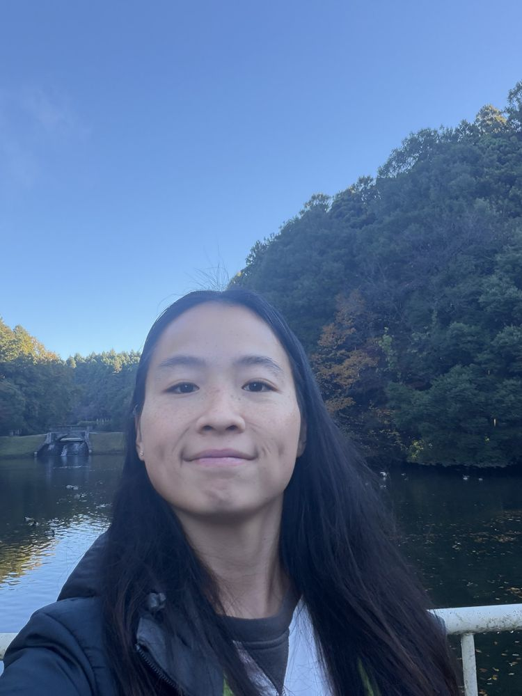

Today is another little look back at yesterday and this morning. Nothing special happened, but I think these normal days are the real Japan.
Yesterday: a simple dinner

After work, dinner was simple. Tuna rolls (tekka maki), a fish and onion salad, and a seaweed side dish with okra. No cooking, no stress. After a long day, this is perfect for me.
This morning: onigiri for the road

This morning the sky was so blue that I wanted to go outside. I made an onigiri (rice ball), wrapped it in foil, and went for a walk. Eating an onigiri while walking in the cold morning air… it tastes better than at the table, haha.
This morning: a quiet lake
I walked to a quiet lake. There is a white gazebo by the water, and the trees around the lake are changing color. Red, orange and green, with a perfectly blue sky.

It was cold, but the air was so clean. Only birds and the sound of my steps. I stood there for a few minutes and just breathed.
A quiet morning is the best gift before a busy day.
My little look back
- Best food: onigiri in the cold morning air
- Best view: the blue sky over the lake
- Best feeling: a few quiet minutes before work
In the Japanese countryside, you don't need to go far for a beautiful morning. Sometimes a short walk is enough.
How do you spend your mornings? Tell me in the YouTube comments, or post your Ibaraki photos with #KahoIbaraki!